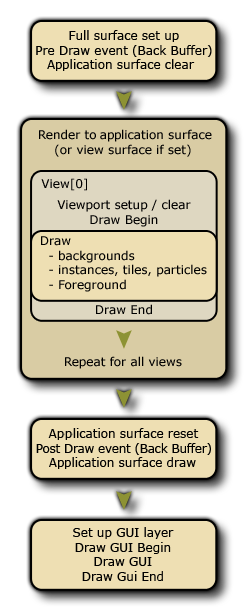

L' événement Draw est celui qui régit ce que vous voyez sur l'écran lorsque vous exécutez votre partie, et il est divisé en plusieurs sous-événements distincts pour mieux gérer les différentes exigences de dessin pour votre jeu. L'image ci-dessous illustre l'ordre dans lequel chaque événement est effectué:  L'événement Draw normal se divise en trois types de sous-événements: les événements Draw Begin, Draw standard et Draw End. En général, vous n'aurez besoin que d'utiliser le sous-événement Draw standard et vous devez être conscient que toutes les instances d'une salle verront cet événement déclenché à chaque étape du jeu, donc ce sous-événement sera toujours appelé aussi longtemps que le instance a l'indicateur visible défini sur true. Même si vous n'avez rien défini pour ce sous-événement dans les propriétés de l'objet (ie: pas de code ni d'action), si l'objet a un sprite assigné, il aura toujours un sous-événement draw qui sera déclenché. C'est parce que GameMaker Studio 2 a deux façons de dessiner des choses dans le sous-événement Draw: application
- le dessin par défaut, qui consiste à définir l'image-objet dans les propriétés de l'objet et à ne placer aucune action ou code dans le sous-événement Dessin normal, auquel cas GameMaker Studio 2 dessine cette image-objet. Notez que toutes les transformations que vous effectuez dans d'autres événements pour changer l'échelle de l'image, l'index, le mélange etc... seront reflétées aussi longtemps que l'événement draw est vide.
- le dessin personnalisé, qui consiste à placer du code ou des actions dans l'événement draw. Cela GameMaker Studio 2 à GameMaker Studio 2 "Je veux contrôler ce que vous dessinez pour les instances de cet objet" et il annule complètement le dessin par défaut. Cela signifie que, par exemple, vous pouvez affecter un objet avec une image-objet, puis définir l'événement draw pour dessiner du texte et l'image-objet ne sera pas dessinée car vous n'avez pas demandé à GameMaker Studio 2 de le dessiner avec le texte.
Le reste des événements de dessin sont expliqués dans les sections suivantes:
En dehors du sous-événement Draw principal, vous avez également un sous-événement Draw Begin et Draw End. Ceux-ci agissent exactement comme un sous-événement Draw standard (ie: ils dessineront tout ce que vous y mettez à chaque étape du jeu et pour toutes les vues), mais ils ne "dessineront" rien s'ils ne sont pas ajoutés à un objet, et ils fonctionneront toujours avant / après le sous-événement Draw standard. Donc, vous auriez le tirage au sort Begin étape pour tous les cas, le tirage au sort pour toutes les instances, puis finalement l'étape de fin de tirage au sort pour toutes les instances.
De cette manière, vous pouvez dessiner ou définir des propriétés de dessin dans l'étape Dessiner le début dans une instance et vous assurer que toutes les occurrences avec un événement Draw ou Draw End standard utiliseront ces propriétés ou dessineront ce que la première instance a dessiné. Fondamentalement, c'est un moyen sûr de s'assurer que certaines choses sont tirées à certains moments, tout comme les événements Begin Step et End Step.
Il y a quelques petites choses à noter lorsque vous GameMaker choses dans GameMaker Studio 2, que ce soit un sprite que vous GameMaker ou un shader, ou 3D:
- L'événement draw est un événement très intense, en ce sens que c'est l'un des événements qui prend le plus de temps et de ressources... à cette fin, il n'est jamais bon de faire quoi que ce soit dans l'événement draw autre que le dessin. Enregistrez donc votre code volumineux ou des actions complexes pour l'événement Step ou les alarmes ou tout autre événement, mais laissez l'événement de dessin dégagé pour le dessin car c'est ce qu'il fait le mieux.
- Si le paramètre visible est désactivé sur votre objet (afin que les instances de l'objet ne soient pas dessinées), tous les événements de dessin sont ignorés (à l'exception de l'événement Resize ). Cela signifie qu'une instance invisible empêchera l'exécution de tout le code placé dans l'un de ces événements, donc ne mettez pas de code essentiel dans les événements draw s'ils ne sont pas visibles.
- Ce que vous dessinez n'a rien à voir avec le moteur de collision choisi (traditionnel ou physique) tel qu'il est défini par les propriétés de l'objet et l'image-objet (ou masque) que l'objet a été donné.
Le type de sous-événement Draw Gui relève de la catégorie Draw Event et est spécifiquement conçu pour dessiner des éléments GUI (Graphical User Interface) qui ne sont pas affectés par l'échelle ou la rotation de la vue. Cela signifie que vous pouvez avoir une instance dessiner tous les éléments pour votre HUD sans avoir à baser tout le positionnement des éléments sur la position de l'instance dans la pièce ou la position de la vue actuelle.
Lorsque vous dessinez dans ces événements, il est important que vous compreniez que les coordonnées de dessin ne changent pas même lorsque les vues sont actives et (0,0) est toujours le coin supérieur gauche de la surface d'application ou de l'affichage (voir la remarque au en bas de cette section), et la largeur et la hauteur par défaut sont 1: 1 avec la surface d'application. L'ordre de profondeur est toujours maintenu entre différentes instances sur différentes couches (donc une instance sur une couche inférieure dessine sous une couche supérieure) et aussi dans les événements eux-mêmes, car le sous-événement Draw GUI Begin dessine d'abord toutes les instances, alors l' interface graphique Draw standard dessine pour toutes les instances, et finalement le sous-événement Draw Gui End est déclenché.
De cette façon, vous pouvez dessiner des objets ou définir des propriétés de dessin dans l' interface graphique Draw dans une instance et vous assurer que toutes les instances avec un sous-événement standard Draw GUI ou Draw GUI End utilisent ces propriétés ou dessinent ce que la première instance a tiré. Fondamentalement, c'est un moyen sûr de garantir que certaines choses sont tirées à certains moments, tout comme le font les sous-événements Begin Step et End Step.
Ces événements peuvent également être utilisés conjointement avec les sous-événements Draw normaux (qui seront affectés par la position, l'échelle et la rotation de la vue comme d'habitude). Si vous n'avez pas d' événement Draw mais que vous avez un événement Draw GUI, alors GameMaker Studio 2 conserve par défaut l'image-objet de l'instance (si elle en a une) comme d'habitude.
En relation avec les autres sous-événements draw, les événements Draw GUI dessinent toujours sur tout ce qui est dessiné dans les événements draw normaux. Donc, si vous avez une instance sur un calque inférieur avec un événement Draw GUI, il attirera l'instance qui se trouve sur un calque supérieur avec un événement draw normal. Si les deux instances ont un sous-événement Draw GUI, l'ordre des couches sera respecté.REMARQUE: cet événement dessine par défaut 1: 1 avec la taille de la surface de l'application, qui correspond normalement à la taille de la pièce ou au port de vue. Cela signifie que lorsque vous avez Correction du rapport d'aspect dans les options de jeu, l'interface graphique ne va pas être dessiné sur les barres noires que "boîte aux lettres" le jeu. Ce comportement peut être désactivé en utilisant le display_set_gui_maximise fonction, et vous pouvez également verrouiller l'événement GUI à une taille spécifique qui sera ensuite mise à l'échelle pour s'adapter à l'affichage ou les dimensions de surface de l'application automatiquement en utilisant la fonction display_set_gui_size.
Les sous-événements Pré-tirage et Post-tirage font partie de la catégorie Événement de tirage. Toutefois, contrairement aux autres événements Draw, ils sont directement dessinés dans le tampon d'écran, qui correspond à la taille de l'espace d'écran combiné pour toutes les vues actuellement visibles ou à la taille de la fenêtre si une seule vue ou aucune. L'image ci-dessous illustre ceci:Ainsi, si vous utilisez les événements Pre ou Post draw, vous dessinez sur la cible de rendu en plein écran qui aura la même taille que la fenêtre à laquelle toutes les vues sont adaptées. Si vous n'avez pas de vue active, elle est définie à la place de la taille de la fenêtre elle-même.
Le sous-événement Pre Draw est déclenché avant tout autre événement draw, et vous pouvez y définir des valeurs, définir des propriétés draw et même dessiner des choses sans vous soucier des vues ou de la taille de la couche GUI (la taille de la couche GUI peut être la même en tant que tampon d'écran, mais il peut ne pas puisque vous pouvez définir la résolution de l'interface graphique en code).
Il convient de noter que cet événement se produit avant que le tampon d'écran ne soit effacé, ce qui signifie que si vous ne désactivez pas l'effacement de vue dans l'éditeur de pièce, rien ne sera visible dans l'événement Pre Draw. Si vous voulez être capable de voir à travers les vues elles-mêmes, ou vous n'utilisez pas du tout les vues, alors vous devriez également avoir défini la couleur de fond pour avoir un alpha de 0 dans l' éditeur de pièce.REMARQUE: Si vous désactivez ces options, vous remarquerez peut-être que des artefacts indésirables sont dessinés à l'écran lorsque le jeu est testé (comme des "traces" provenant d'instances). C'est parce que vous dessinez directement sur l'image précédente de la mémoire tampon sans qu'elle soit effacée. Cependant vous pouvez utiliser draw_clear_alpha pour le faire vous-même.
Le sous-événement Post Draw est déclenché après les événements de dessin standard, mais avant les événements Draw GUI. Comme l'événement Pre Draw, il est basé sur la taille de la taille de la mémoire tampon et est placé avant les événements Draw GUI pour vous permettre d'effectuer des effets de post-traitement et d'autres choses en plein écran simplement et facilement sans interférer avec HUD / GUI éléments que vous pouvez avoir dans votre jeu.
Ce type d'événement tombe sous la catégorie Draw Event, et bien qu'il ne dessine réellement rien, il réagit aux changements dans le canevas de dessin - en particulier, il est conçu pour réagir à la modification de la taille du canevas Windows 8 8/10 lorsque la fenêtre de jeu est "cassée".
Sur la plate-forme cible Windows 8 il est important d'observer tout redimensionnement de la toile de jeu à partir de la «capture» de la fenêtre de jeu (lorsque l'utilisateur fait glisser la fenêtre sur le côté de l'écran, par exemple). Cet événement fera exactement cela et est déclenché chaque fois que le canevas est modifié, ce qui vous permet d'ajouter du code personnalisé ici qui redimensionnera la vue ou repositionnera les éléments HUD si nécessaire. Cette fonction est fournie comme un moyen pratique d'éviter d'avoir un code d'événement d'étape qui vérifie ces choses tout le temps.NOTE: Vous ne pouvez pas dessiner dans cet événement! Il est déclenché en redimensionnant le canevas et sert uniquement à attraper cette modification... tout dessin qui doit être fait doit toujours être dans l'un des autres événements de dessin.